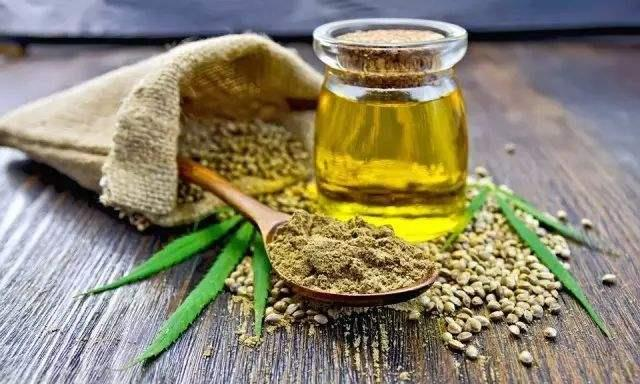

Valg av olje er et viktig valg. Det kommer an på interesse og oljens virkning. Denne oljen brukes for å kurere kreft. Vi anbefaler:
Cannabis er en plante som er blitt benyttet til medisinsk og rekerasjonelt bruk i tusenvis av år, men det var ikke før i 1996, etter at cannabis ble legalisert til medisinsk bruk i staten California, at medisinsk bruk og innsikten rundt cannabis sine medisinske virkninger virkelig skjøt fart. I dag er cannabisolje blitt et populært behandlingsalternativ innenfor vestlig folkemedisin som har vist seg å kunne gi dramatiske resultater ved en rekke alvorlige sykdommer.
